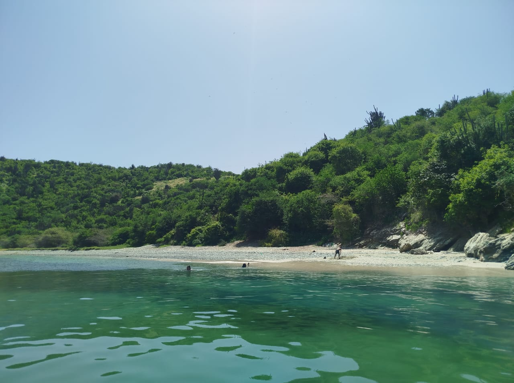
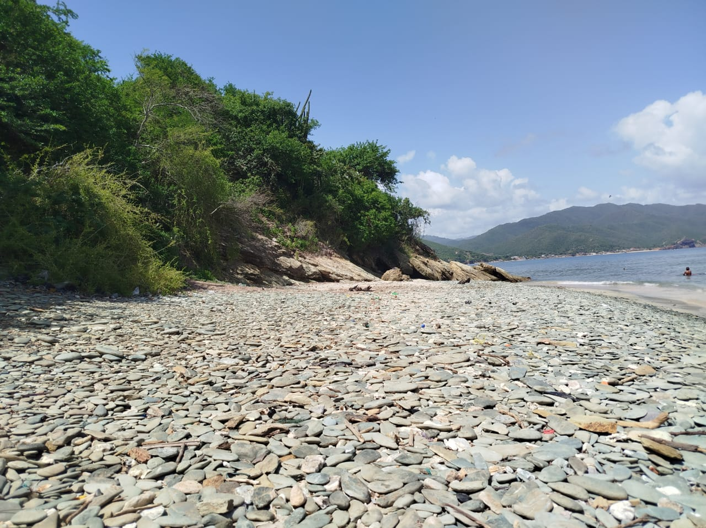
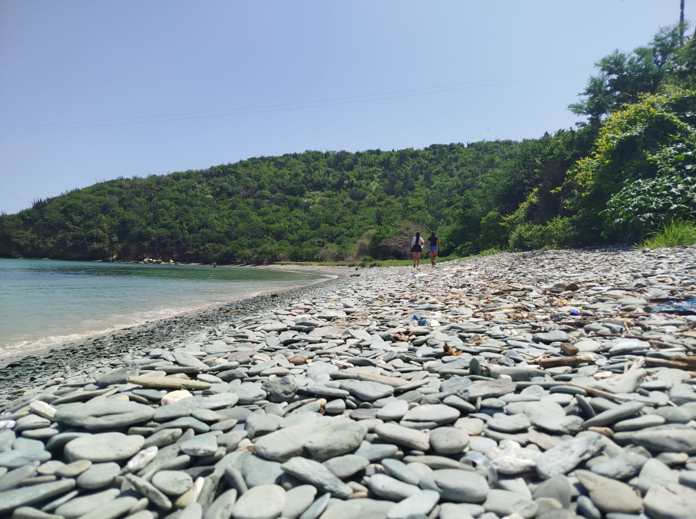
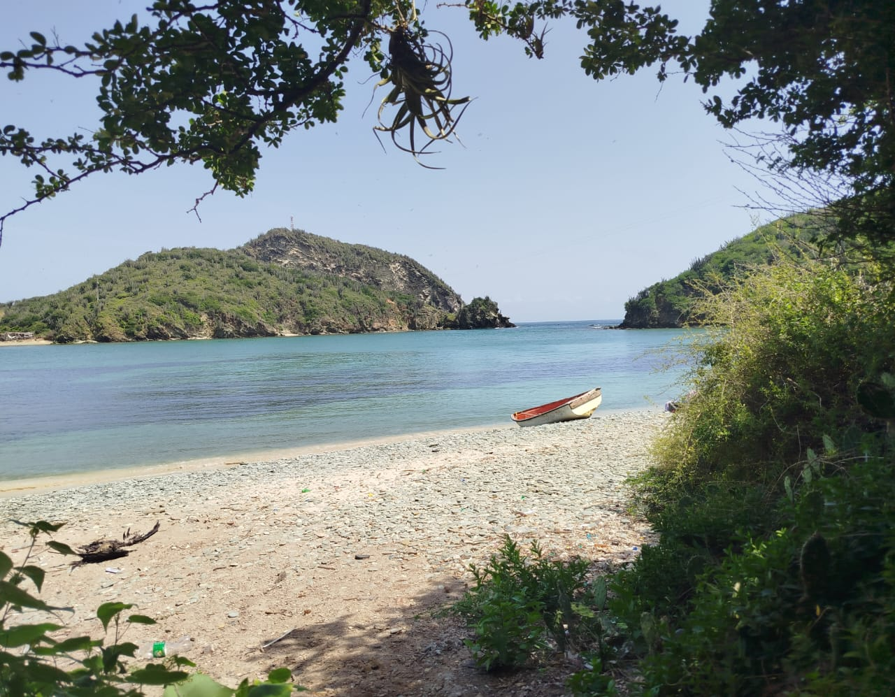
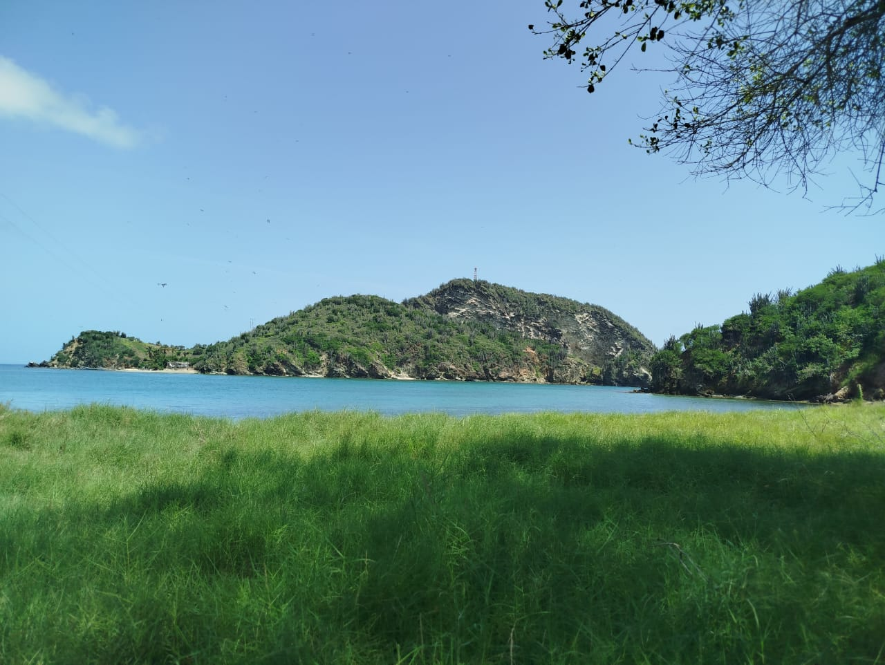
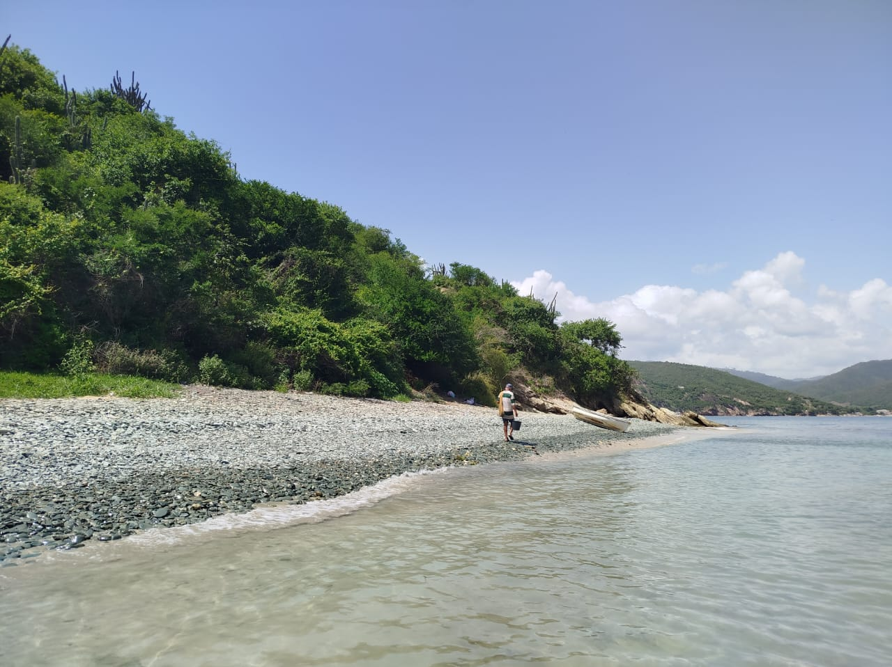
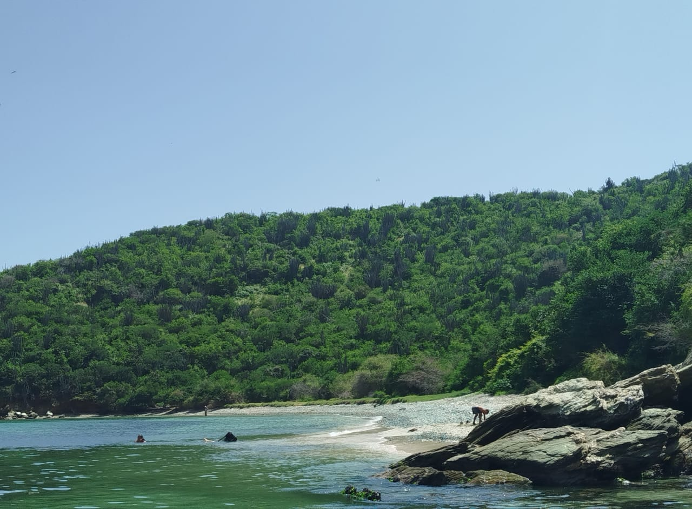
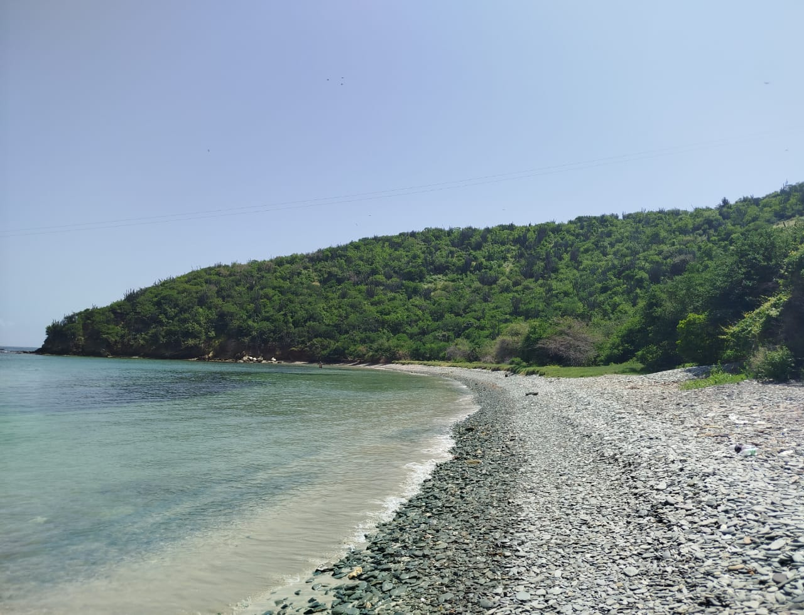

Imagina un lugar donde el tiempo se detiene, donde cada ola que rompe en la orilla te susurra historias de paz. Así es La Francesa, una joya escondida en El Morro de Puerto Santo. No esperes la arena fina que se escurre entre los dedos; aquí, te recibirá un manto de piedras pulidas por el mar, una alfombra natural que invita a caminar descalzo y sentir la tierra bajo tus pies.




Sus aguas, tan transparentes que parecen espejos del cielo, te invitan a sumergirte y olvidar el mundo. Rodeada de montañas que se visten de un verde intenso, esta playa no solo es un festín para la vista, Es el lugar perfecto para respirar profundo, para escuchar el canto de las aves, para simplemente ser. La Francesa un rincón donde puedes recargar tu energía y conectar contigo mismo, lejos del bullicio, cerca de la verdadera esencia de la vida.




Cómo Llegar
Ubicada en El Morro de Puerto Santo, esta hermosa playa es fácilmente accesible por senderos naturales que atraviezan el sector El Dique tanto por la parte alta como por la parte baja. otra opción son los medios acuáticos; cayucos y botes.
Mejores Días
Usualmente esta playa es pacífica y tranquila y muy poco frecuentada, por lo cual su visita puede ser en cualquier día de la semana.
¿Por Qué Visitarla?
Sus aguas cristalinas, el ambiente de paz absoluta y la belleza natural la convierten en un destino único para desconectar y recargar energías.
La Playa de La Francesa
Más allá de su serena belleza, La Francesa ofrece una accesibilidad sorprendente para un edén tan prístino. Llegar a ella es parte de la aventura, un paseo por un encantador "caminito del dique" que serpentea entre la vegetación, abriendo la puerta a este santuario natural. Este sendero no solo facilita el acceso, sino que también actúa como una introducción gradual a la tranquilidad que espera, preparando tus sentidos para la calma que está por venir. Es una invitación a dejar atrás el ajetreo y sumergirse en la cadencia relajada de la naturaleza.
Una vez en La Francesa, te darás cuenta de que no es solo una playa, sino una puerta a la esencia del Morro de Puerto Santo. Su ubicación estratégica en la "retaguardia" del morro ofrece una perspectiva única y una sensación de privacidad inigualable. Desde aquí, la vista se abre a la inmensidad del mar y, en el horizonte, emerge majestuoso el Islote, un centinela rocoso que añade dramatismo y belleza al paisaje. Observar las aves marinas sobrevolar el Islote y las pequeñas embarcaciones mecerse en las aguas cercanas, es un recordatorio constante de la vida marina que prospera en este rincón bendecido, completando la postal de este paraíso escondido.
